Klon Centaur Analysis
The Klon Centaur in an overdrive guitar pedal designed by Bill Finnegan with the help of 2 MIT Electronic Engineers between 1990 and 1994. The initial idea was to improve the TubeScreamer transient response and the midrange-bass frequencies in order to create a big open sound with a hint of tube clipping: the so-called transparent overdrive.
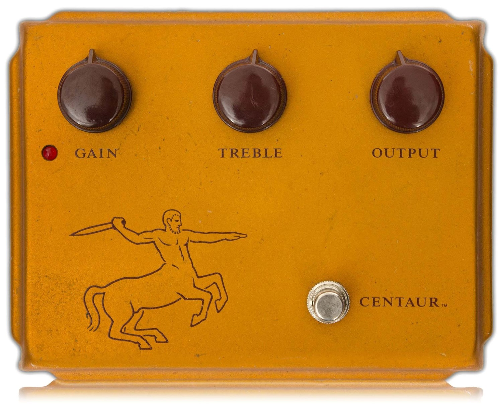
The design process took more than 4 years and the result was a mythic $329 hand build pedal that was running in production for 15 years. Nowadays the original models are highly appreciated, you just need to check eBay to see how high it goes.
Table of Contents:
1. Klon Centaur Circuit.
1.1 Klon Centaur Circuit Layout.
2. Power Supply.
2.1 The importance of a big fat power supply.
3. The Input Buffer.
3.1 Klon Centaur Input Impedance Calculation.
3.2 Klon Centaur op-amp: The TL072.
4. The Op-Amp Gain Stage.
4.1 Gain Calculation.
4.2 Germanium Clipping Diodes.
4.3 FeedForward Networks.
5. The Summing Op-Amp.
6. Klon Centaur Tone Control.
7. The Output Stage.
8. Bypass Mode.
9. Klon Centaur Sound Signature.
10. Analysis Resources.
The Klon Centaur schematic could be broken down into 5 parts: Input Stage, Op-Amp Gain Stage, Summing Stage, Tone control, Output Stage and Power Supply:
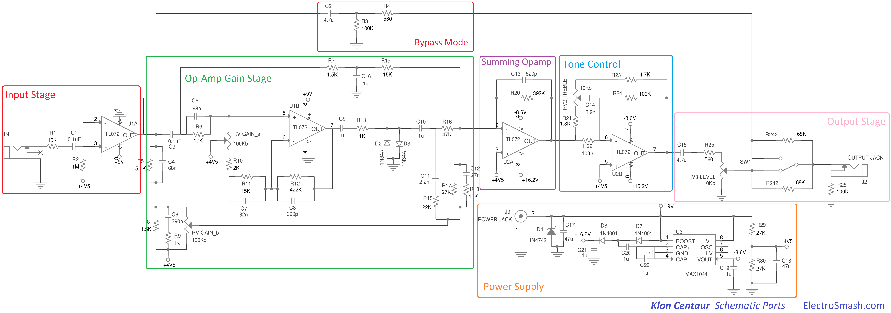
The circuit is quite original, showing a mix of academic electronic design together with pure experimental/think-out-of-the-box blocks. The development process was based on long listening tests, trying different resistors & caps values and listening to the sound variation, this is why the bill of materials has so many references and tricky values.
The op-amp used is simple TL072, proving that for a great sounding guitar pedal no exotic/mojo/expensive parts are needed, just pure and smart electronic design.
1.1 Klon Centaur Circuit Layout.
The circuit uses a single layer PCB with standard through-hole components. In the parts of the circuit where double side PCB are needed (tracks crossing), there are links (wired bridges) that make the manufacture easier and cheaper. However, all the potentiometers, jacks and the battery are wired and hand soldered to the PCB which makes it quite labor intensive.
This PCB is famous for being covered with black epoxy resin (gooped) in order to prevent people from replicating it.
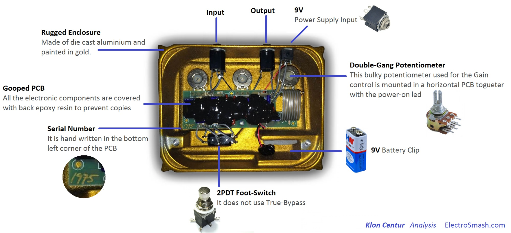
Klon Centaur Models: Gold vs Silver - During its 15 years of production, the Klon enclosure and circuit had some variations in color and graphics, but in theory, the minimal variations between the years do not affect the sound:
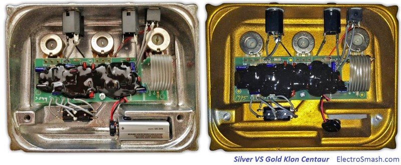
“The fact is, under the hood they’re all basically the same. In 1995 I made three small changes: I added a resistor to give the circuit some protection against a static charge delivered to its input—a change that has no sonic effect. I also had the circuit board redesigned with a ground plane for better grounding—again, no sonic effect except the potential for a little less hum. And I added a resistor to give the circuit a very small amount of additional low-mid response—I wanted it to have a little more roundness when used with, say, a Strat into a Super Reverb. I made no other changes.” - Bill Finnegan, Premier Guitar interview -
The power supply uses the MAX1044, a voltage converter that can invert, double, divide, or multiply an input voltage:
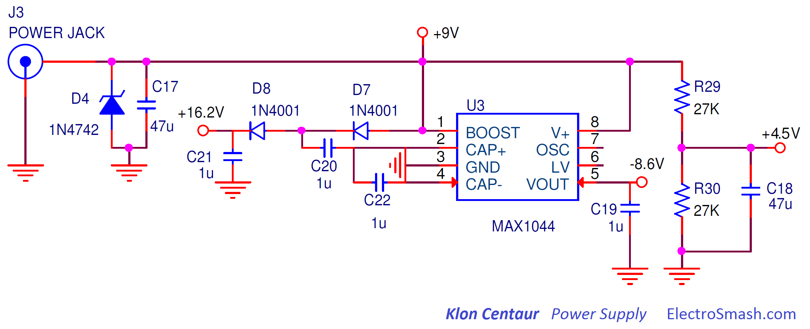
The key factor in the power supply is that the IC is used in an unorthodox way; this part is normally used as a "Simple Negative Converter" or as a "Positive Voltage Multiplier", but in the Klon circuit (and against the datasheet) from the 9V battery, the TC1044 makes all the functions at the same time: doubling the voltage (+18V), inverting it (-9V), and halving it (+4.5V using a resistor divider).
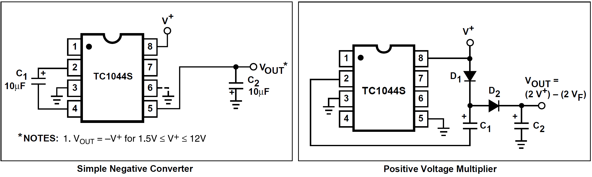
This variety of voltages is crucial to the circuit and used in different areas to create the sound signature of the pedal:
- 9V: used in the first stages of the circuit (input buffer and op-amp amplifier) this arrangement is the standard used in most guitar pedals. Nothing special here.
- 18V and -9V: used in the last stages of the pedal, allowing double headroom and also as it is explained later on, to give more slew-rate adding sound character.
- +4.5V: used as virtual ground in every stage of the circuit.
2.1 The importance of a BIG FAT power supply.
The second op-amp is powered between +18V and -9V, giving a total of 27V of headroom.
If an op-amp has a higher power supply rails, it will also have a higher slew rate and therefore it would be able to reproduce with higher fidelity faster guitar signals (transients) and higher harmonics. This factor is pretty important for the Klon Centaur distortion sound signature.

Note: The Slew Rate of an op-amp describes how fast the output voltage can change in response to an immediate change in voltage at the input. The higher the value (measured in V/µs) of slew rate, the faster the output can change and the more easily it can reproduce high-frequency signals.The TL072 has a 13-V/μs slew rate, which is above the average op-amp slew-rate (10V/us).
After the distortion stage, the following op-amp is fed with a high power supply (+18V,-9V) so it would be able to keep up with the fast rate and complex waveforms of the clipped guitar signal.
The input stage is a simple buffer based on the TL072 op-amp. The task of this circuit is to isolate the guitar pedal electronics from the external world, providing a high input impedance (avoiding sound coloration) and DC isolation.
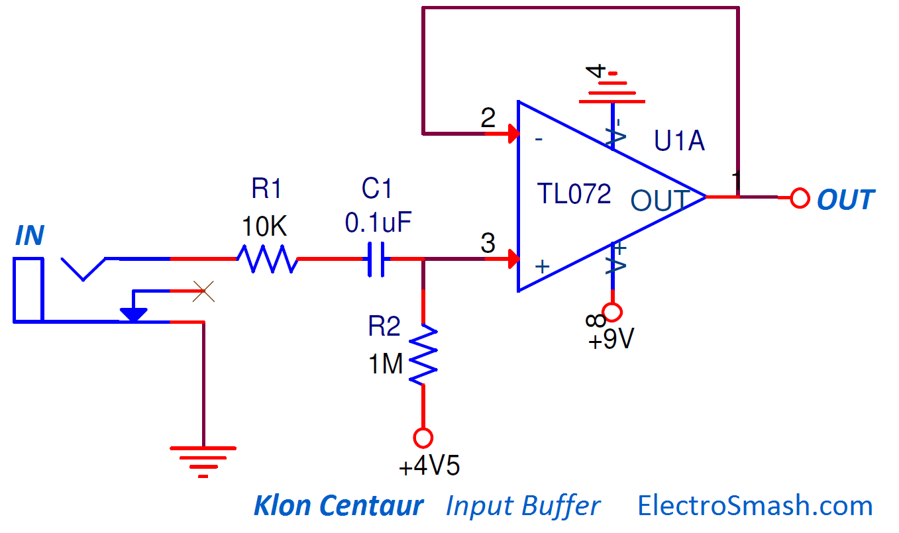
- The R1 input resistor will limit the amount of current going into the op-amp, protecting it against electrostatic discharges (ESD).
- The C1 input capacitor stops any DC coming from the guitar and together with R2 will form a high pass filter (fc=1/2*π*RC = 1/2x3.14x1MΩx0.1uF = 1.5Hz) 1.5HZ is completely out of the audio spectrum and will not affect the original signal or add any tone/coloring to the signal.
- R2 is a biasing resistor, adding virtual ground (+4.5V) at the non-inverting (+) pin of the op-amp. As a rule of thumb, the value of this resistor is at least 10 times the value of the resistors that make the virtual ground ( R27 and R30 are 27KΩ).
3.1 Klon Centaur Input Impedance Calculation.
The input impedance is calculated as:
Zin = R1 + ( R2 // TL072Zin )
The TL072 is a JFET op-amp, so it has a massive input Impedance (Zin = 1012Ω in the datasheet). The Zin is calculated as:
Zin = R1 + R2 = 10KΩ + 1MΩ = 1MΩ approx.
1MΩ is a good high input impedance that will avoid loading guitar pickups and tone sucking.
3.2 Klon Centaur op-amp: The TL072.
The Klon Centaur is an engineering exercise of how to make a great sounding guitar pedal without using any exotic part or obsolete integrated circuit.
TL072 op-amp is a JFET op-amp, therefore it has low bias current (that will reduce battery consumption) and high input impedance (keeping the signal integrity and adding minimum tone coloration). It is also a cheap and easy-to-find op-amp broadly used in all kinds of audio circuits.
Regarding the TL072 clipping behavior, when it goes into clipping and the signal hits its negative rail, the op-amp promptly inverts its phase, so the circuit either latches up or shows a hard clipping behavior (even going into oscillation). The positive common mode limit is in contrast trouble-free.
The Op-Amp Gain Stage will boost and clip the input signal depending on the position of the Gain potentiometer. This stage will also filter the original guitar waveform tailoring the frequency response.
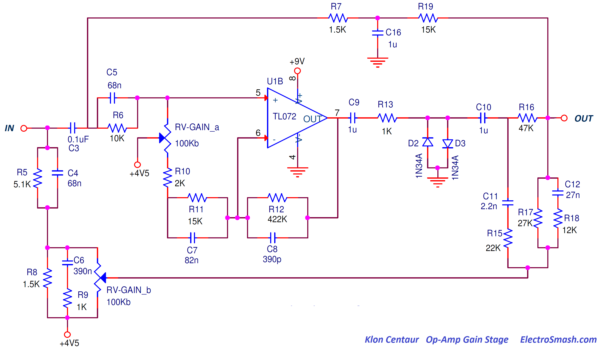
4.1 Gain Calculation.
This a priory simple non-inverting topology gain calculation turns out complicated due to the fact that the C7 and C8 capacitors in parallel with the R11 and R12 resistors shape the frequency response interacting with each other:
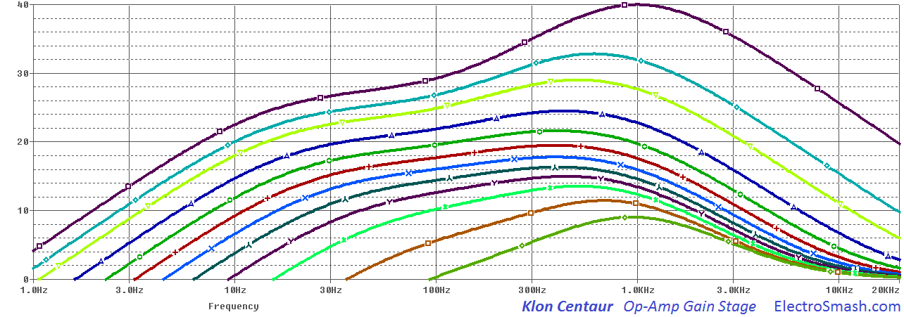
In the graph above it can be seen that the maximum gain is 40dB (100 times) around 1KHz and it decreases as the freq rolls lower or higher. This maximum gain is in line with what other similar pedals have: Boss DS-1 (35dB) or Tube Screamer (41dB).
This big 40dB gain will make the TL072 go into clipping, the signal will hit the power supply rails when the gain is set to high values.
The "mid hump" around 1KHz helps the guitar sound to stand out over the rest of the band, was also observed in some previous pedals (Tube Screamer humps at 723Hz and the ProCo Rat at 1KHz ).
4.2 Germanium Clipping Diodes.
According to Bill Finnegan (Klon Centaur Designer), the type of diodes used in the Op-Amp Stage make a great difference in the sound:
"These diodes are the most important factor in how the circuit sounds when it's being used to create distortion"
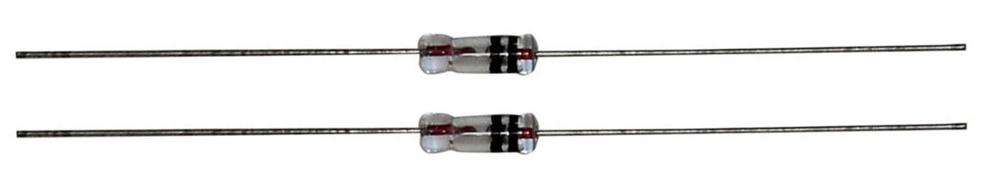
"I have always used a germanium diode with the part number 1N34A, but you should understand that this particular part has since the 1950s or so been manufactured by literally hundreds of different companies, and having listened to as many different ones as I have, I can say with confidence that they all sound somewhat different in my circuit, and often they sound VERY different."
The clipping diodes define the distortion sound signature, it is built using 2 back to back diodes that shunt the signal to ground, this clipping method gives a hard-clipping sound also used in many other pedals (MXR Distortion+, RAT and Boss-DS1).
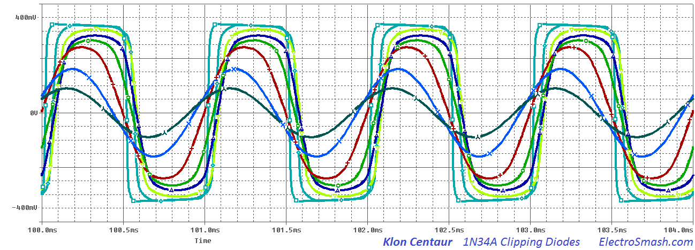
In the image above, the signal after the resistor R13 is shown, as the gain potentiometer goes higher, the diodes start to compress the signal, with a soft knee first and more aggressive at the end.
The 1N34A germanium diodes have a forward voltage VF=0.35 which is quite low compared to silicon diodes that usually have 0.7V drop, resulting in a harder compression of the signal.
4.3 FeedForward Networks.
In parallel with the Op-Amp Gain Stage, there are 2 FeedForward networks, they have different tasks:
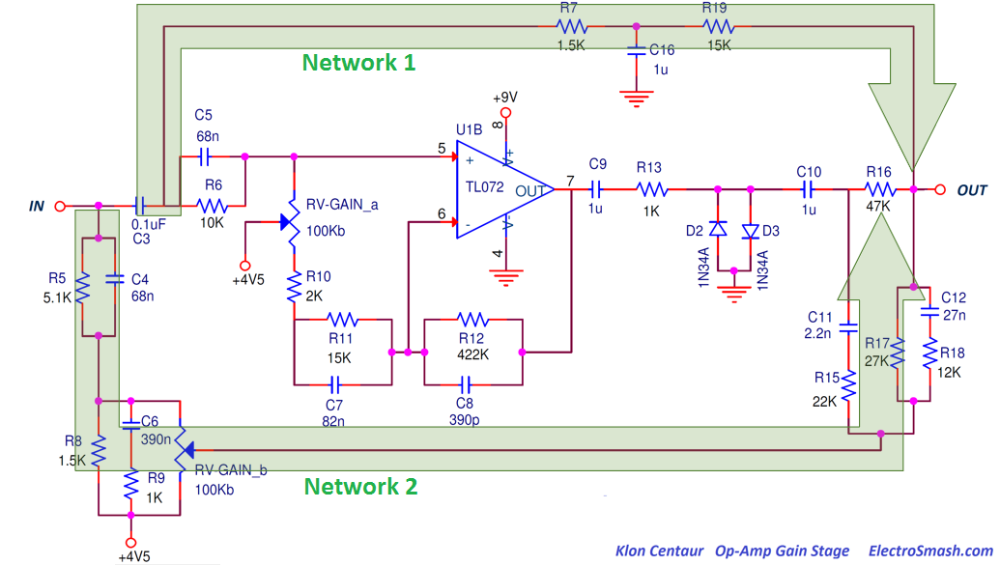
- Network 1: Formed by R7, C16, and R19. It is a low-pass filter that attenuates the harmonics over 106Hz (fc=1/(2xπxR7xC16)). This clean and filtered signal is added to the distorted signal coming from the Op-Amp Gain Stage, adding some lower end to the final sound.
- Network 2: This one is more complex, it includes the secondary gang of the Gain potentiometer. This gang works against the primary gang in the Op-Amp Gain Stage, that is to say, that as the op-amp output signal goes louder, this 2nd feedforward network signal goes quieter (and vice-versa) giving balance to the mix.
According to Finnegan, this network “optimizes the circuit’s overall tonal response for whatever the main gain stage is generating in the way of level and distortion.”
This op-amp will add the output signal of the Op-Amp Gain Stage and the two Feed-Forward Networks mentioned above. This circuit is quite important for the sound signature because it sums the distorted-clipped signal (coming from the Op-Amp Gain Stage) and the clean signals (coming from the FeedForward Networks). This sum creates a signal that has dynamics and not just pure distortion. This sound was later called transparent overdrive.
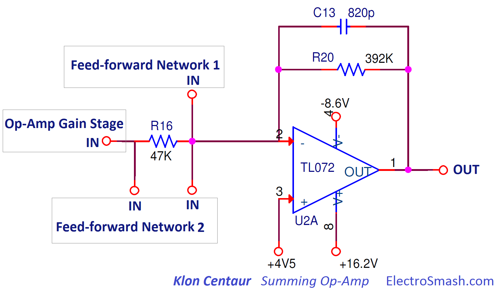
The amount of gain that this op-amp introduces is enormous, around 100dB (see graph below), it is like this because each of the three paths (Op-Amp Gain Stage, Feed-Forward Network 1 and 2) that end at the input of this op-amp receive a smaller amount of gain that sums up:
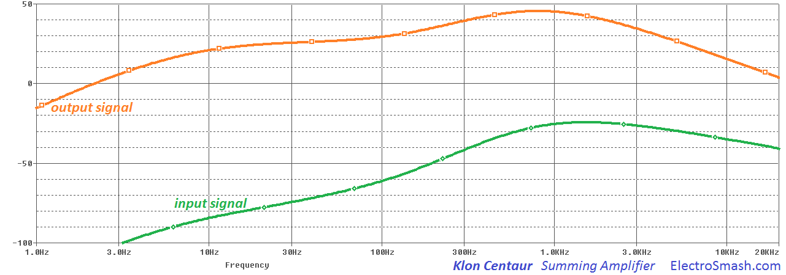
- The Resistor R20 and the cap C13 form a low pass filter, attenuating frequencies above 495Hz (fc=1/(2xπxR20xC13)) that accentuates a bit more the mid-hump boost.
The tone control is an Active High Pass Shelving Equalizer. It passes all freqs up to 400Hz and the frequencies above that point get boosted or cut:
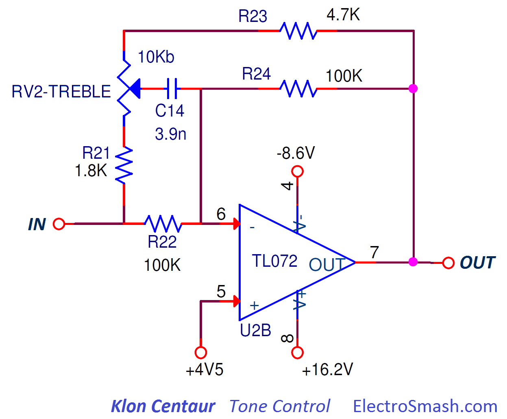
- The default gain of this block is set at unity gain (1). The frequency at which the equalizer with either adds gain (boost) or attenuation (cut) to the signal is determined by the following equation:
fc = 1 / (2xπxR22xC14) = 408Hz.
Frequencies above 408Hz will have boost or cut.
- The gain of the pass band is defined by R24/R22 = 1 (unity gain)
- The gain of the boost/cut band is defined by the formula:
Gvmax= (RV2+R23)/R21 = (14.7/1.8) = 8.16 (18.24dB)
Gvmin= R23/(RV2+R21) = (4.7/11.8) = 0.4 (-8dB)
Note: The shelving filters have many uses in audio, in the Boss CE-2 Chorus guitar pedal are used as pre/de-emphasis filters in order to reduce the noise during the signal processing.
As described before, this circuit will add or remove treble to the final signal:
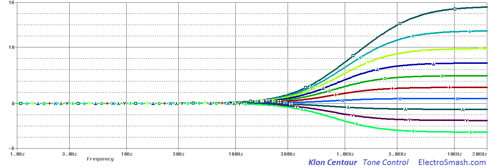
- The gain on the pass-band or on the boost/cut band could be adjusted following the formulas described before.
- The tone control in the Klon Centaur is generally accepted as a good control which is able to adjust the sound of almost any guitar into any amp.
The last stage will adjust the output level of the signal, it is a simple 10K potentiometer that will shunt part of the signal to ground:
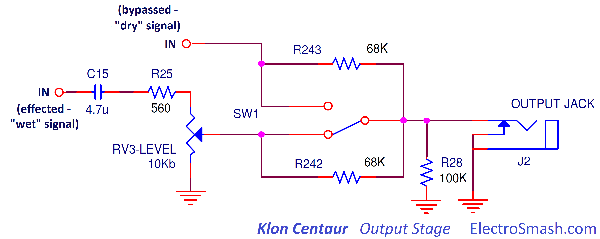
- The C15 capacitor will remove any DC from the output signal. It also creates a high pass filter together with RV3. The cut frequency will depend on the potentiometer value, so as the volume level is decreased, the cut frequency goes higher, starting at fc= 1/(2xπxC15xRV3)= 3.38Hz.
Note: This cut frequency shift is not a problem because even with the output volume at 10% (RV=1K), the fc would be 33.8Hz that will not add coloring to the output signal.
- The two 68KΩ together with the 100KΩ resistors are usually referred as anti-pop resistors, they will avoid abrupt pop sounds when the output jack is connected. This network was not placed in the early versions of the circuit and although the intention could be to kill pop sounds, the fact is that these resistors create a marginal summing output network:
When the effect is on, part of the clean signal will bleed through the R243 to the output. In the same way, when the pedal is off, part of the dirty-effected signal will bleed to the clean output. The contribution is around 1dB and very likely to be not audible.
The frequency response of the Output Stage looks like this:
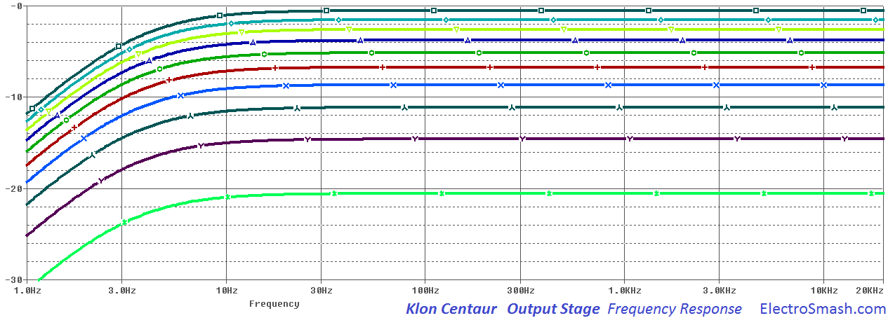
The Klon Centaur does not use a 3PDT switch (aka True Bypass), so when the effect is disabled, the guitar signal still passes through the Input Buffer and two high-pass filters created by C1&R2 and C2&R3. These high-pass filters with cut frequencies of fc=1/(2xπ0.1uFx1M)=1.5Hz and fc=1/(2xπ4.7uFx100K)=0.3Hz will not modify the guitar signal. They will just remove the DC content from the signal.
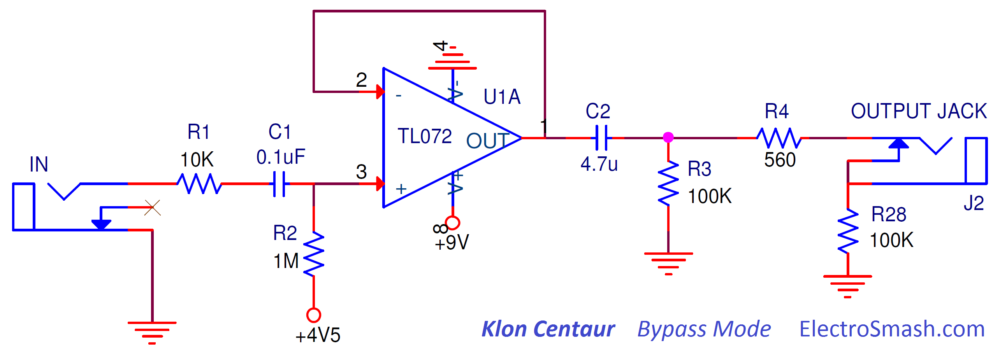
The frequency response when deactivated is flat, with a roll-off on the low frequencies (fc=1.5Hz and fc=0.3Hz) and not affecting audio frequencies:
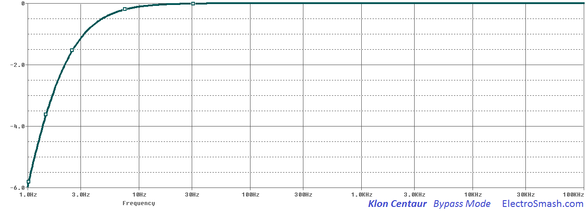
9. Klon Centaur Sound Signature.
The original Klon Centaur prices are shocking, but is it just hype? does it sound so cool? clearly, after looking at the circuit there are some features never seen on other designs.
The Klon Centaur has a unique electronic design, mixing classic bits that you can see on many other guitar pedals (like the input buffer, the back to back diodes to ground after the op-amp gain stage) and some other innovative blocks like the power supply architecture, the feed-forward networks, and the double gang gain potentiometer.
The way that the guitar waveform is processed is quite innovative:
- The Input Buffer keeps the signal pristine and protects the pedal from external factors (figure 1 - left).
- After that, the signal is split into 3 paths: one part of the signal going through the second op-amp and two parts going through the feedforward networks 1 & 2.- This is the key: the waveform at this point looks like shark teeth, due to the different phases that the signal acquires on the feedforward networks. When all the signals are joined before the Summing Amp (figure 1 - center) the signal is bent creating an interesting shape. Other famous pedals like the Tube Screamer also creates a beautiful lopsided shape over the distorted signal.
- Furthermore, this signal is later amplified by the summing amplifier with has a power supply headroom of 27V, quite unusual for a guitar pedal which also provides a good slew-rate in order to keep all the dynamics and rich harmonics (figure 3 - right).
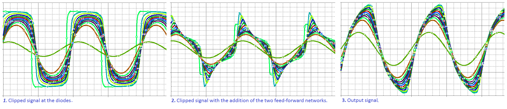
In addition to this basic explanation, there are plenty of other factors that make this effect special and add sound character to the guitar distortion; the double gang gain potentiometer that balances the distortion, the tone control that helps to interact with any kind of guitar or the selected germanium clipping diodes, to name some.
10. Analysis Resources.
PREMIERGuitar Bill Finnegan Interview.
Equalizer Circuits by Electronic Engineering Dictionary.
Koln Centaur Study by Coda Effects.
TL072 Behaviour by Douglas Self.
My sincere appreciation to D. Pereira, Charles.D, P. Babiak and A. Hofseth for their help with this analysis.
Thanks for reading, all feedback is appreciated This email address is being protected from spambots. You need JavaScript enabled to view it.
Rescued from a 2022 Wayback Machine capture of the original electrosmash.com article, which is no longer online. Some links to pages outside this archive have been removed. The original PDF export of this article is in the pdf backups folder.